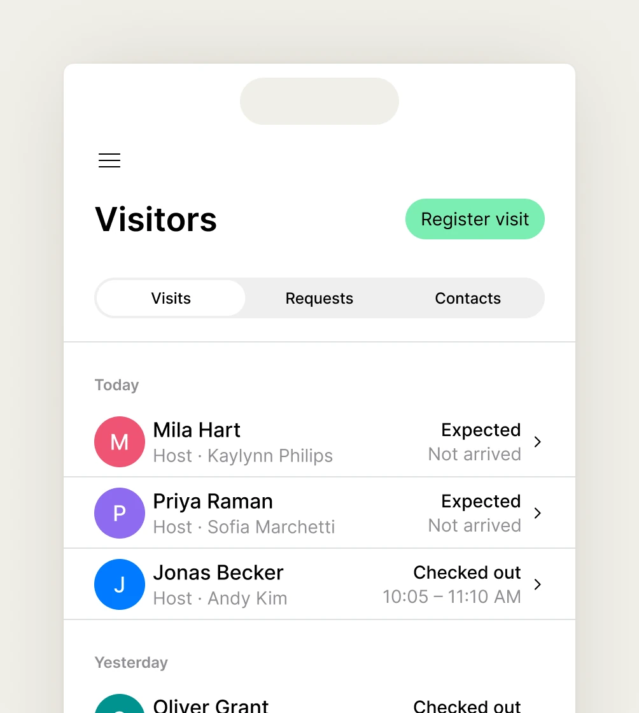
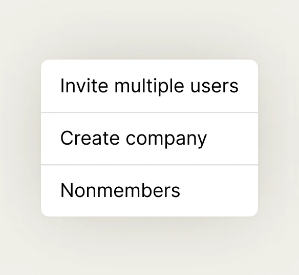
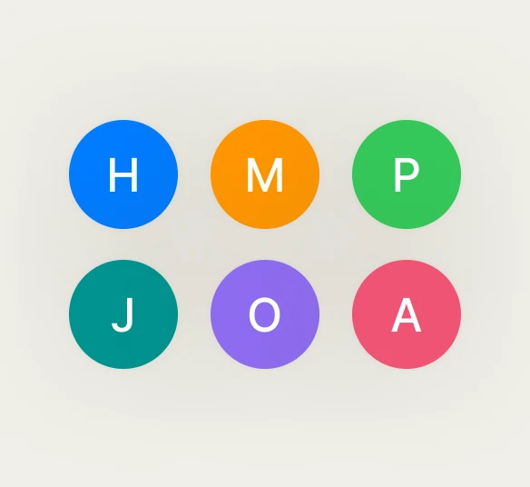
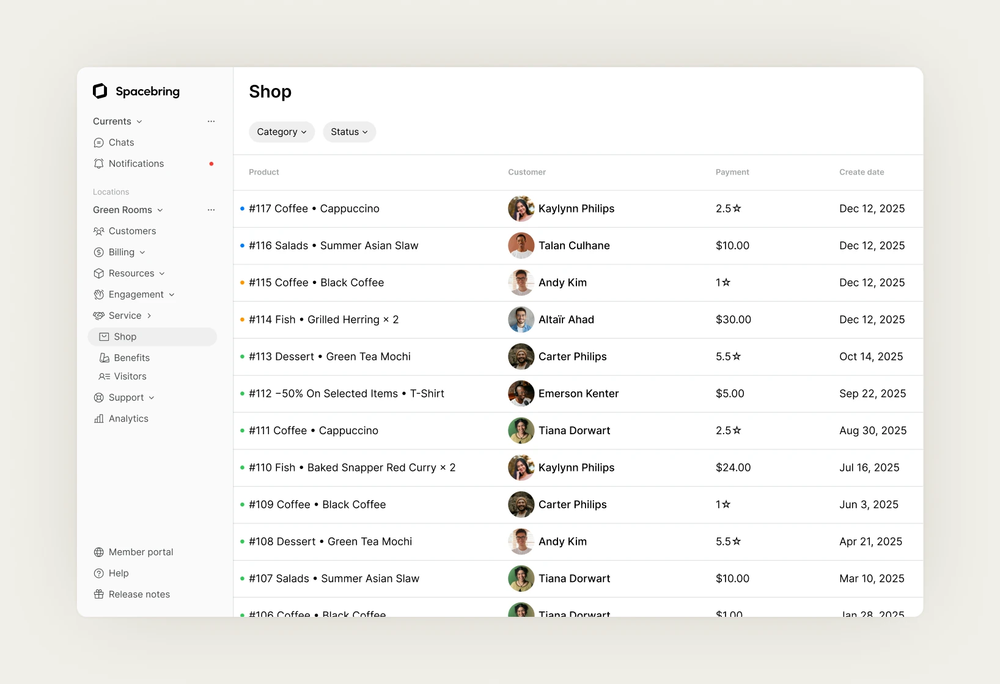

Building a dedicated admin platform for Spacebring
- Role
- UI/UX designer
- Scope
- Web app, design system
- Year
- 2025
- Launch
- Read the launch post

Overview
Spacebring is a coworking management platform. Operators use it to run bookings, billing, access control, customers, events and community from one place.
I designed the new admin platform, the product operators and community managers use to run their spaces every day. It covers customers, desks, visitors, events, chat, the community feed and the shop. I also built the component library the whole platform is made from.



Challenge
Spacebring started as one app for both members and operators. Members book a desk and talk to their community. Operators manage customers, desks, payments and events across a whole space. As the product grew, one app couldn’t serve both well. Each admin feature made the member app heavier, and the member app limited what admins could do.
The answer was two products: the member app, and a new platform made only for operators.
The hard part was keeping it Spacebring. The admin platform had to hold far more data and actions than the member app. Yet existing customers had to feel at home in it from the first day.
Approach
I started from an admin’s day: what they check every morning, what they repeat many times, and what they rarely touch. That order shaped the navigation. Everyday work is close at hand, and rare settings stay out of the way.
I designed the platform one feature at a time, with the same rules on every screen: one way to find, filter and edit, and one place for actions. Once an admin learns one screen, they know them all. On data-heavy screens, a clear hierarchy keeps long tables readable.
Alongside the screens, I built a component library from Spacebring’s existing type, colours and spacing. That kept the new platform familiar and let each new feature be put together from parts that already existed.

Outcome
The admin platform launched as its own product. Operators got a workspace made for running a space, and members kept a simpler app.
The component library became the base of the whole platform. New features reuse its parts, so the product stays consistent as it grows.
